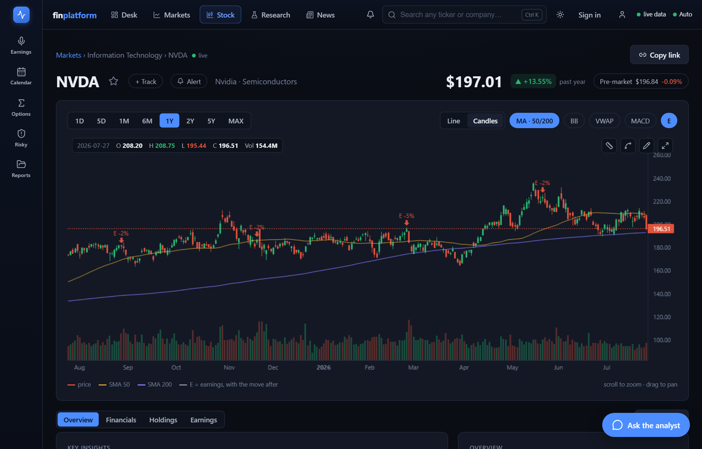
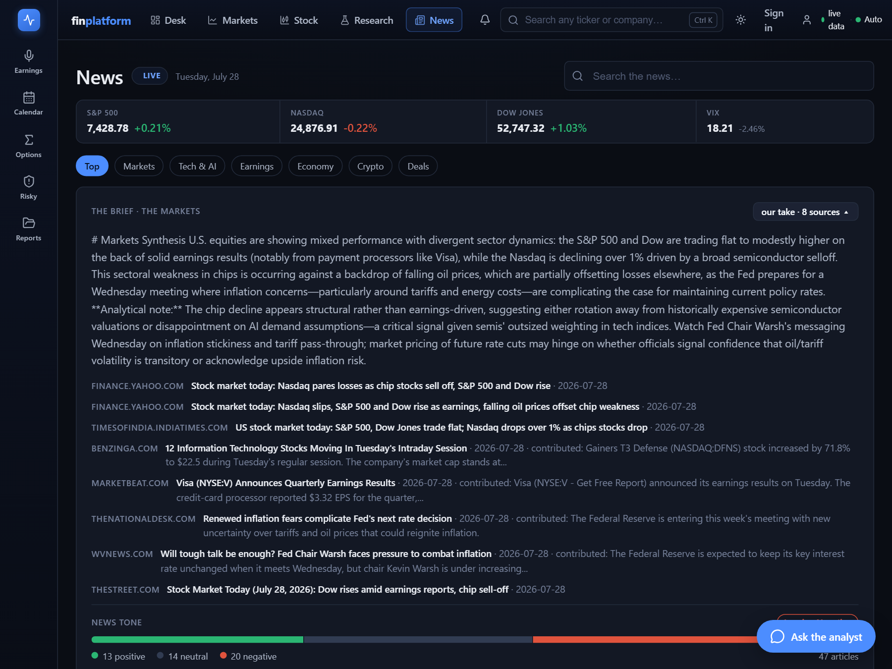

1. One terminal beats five demos
I built five finance tools that each proved one thing: a screener, an options helper, an earnings digest, a research assistant, a terminal shell. None of them was a product you could stay inside. finplatform merges them into one terminal with one data layer, one design system, and one answer format. It runs as a React SPA over a Python backend on Cloud Run, with Supabase holding accounts, credits, reports, and the shared caches.

Figure 1 · system context
Client
A single-page app where every surface renders the same Report contract (§4). There is no second shape for the browser to special-case.
Tokens are verified server-side on every request against the published key set. The client is never the thing that decides who you are.
https · json
Application
Routing, rate limits, credit metering, report assembly. No framework, because the whole surface is a few dozen routes, and a dependency I do not take is a CVE I do not chase.
Task-tiered, capped per request by the user’s pick. The local model is the zero-key fallback, so a missing API key degrades the answer instead of breaking the page.
reads · writes
State
Reports, annotations, shares, credits, and the caches that are shared across users on purpose.
The hot tier in front of Postgres. Per instance, so it is a latency win and never a source of truth.
API keys are never in an image or an env file in production. The sandbox and prod read different secrets under the same names.
provider calls · budgeted and ranked (§2)
External dependencies
Free, roughly 15 minutes delayed, and it throttles. Every price on the site traces back here.
Free and authoritative. The only source that can settle what a company actually said.
Figure 2 · the life of a request
Follow one real read: GET /api/news/brief on the July 28 morning brief. Cheap, honest checks run first, paid work runs last, and the reader gets provenance with the answer.
cap: haiku as a header, so the server knows the most it may spend.as_of 09:32 with zero provider calls.2. The data ledger
What the data costs, where it comes from, and the tables that make the cost visible. Each row below expands into why I chose it.
Data model · what I store
Report { kind, as_of, status # complete | partial | unavailable data # typed per kind provenance { model, tier, credits, elapsed_ms } } Source { url, title, domain, published_at } CacheEntry { query_hash, payload, as_of, ttl } CreditCharge { user, tier, credits, usd }
Read it like this
- Ledger
- What each provider costs per call and what breaks when it is gone.
- Models
- Where that cost lands: cache rows amortize it, provenance rows receipt it.
- Rule
- One user's paid search serves every user until the TTL. Spend scales with distinct stories, not readers.
yfinancequotes · chains · fundamentals$0prod
- Context
- The spine of every price on the site. Free, delayed about 15 minutes, and it throttles hard under load.
- Decision
- Serve the last real value with a visible timestamp instead of retrying into the throttle. A licensed feed is validated in a sandbox but is not the spine yet: free data plus honest staleness labels covers the current surface, and live redistribution carries licensing constraints.
- Consequences
- Under heavy load the site shows “as of 14:02” rather than a spinner or a fake tick. Long chart windows route to a separate series so adjusted and unadjusted bars never splice inside one chart.
SEC EDGAR10-K/Q · 8-K · ownership$0prod
- Context
- Filings power the earnings and leadership surfaces. Vendor APIs summarize; the primary source is checkable.
- Decision
- Parse EDGAR directly. Accept slower parsing in exchange for citations that point at the actual filing.
- Consequences
- The parser only exists in the project virtualenv. Run the server under the wrong interpreter and SEC features silently go empty: no error, just thinner pages. That happened, and it is now a documented run rule with a check.
SearXNGself-hosted metasearch$0 marginaldev only
- Context
- I wanted a search floor with no API key, so development and the free tier never hard-depend on a vendor.
- Decision
- Self-host SearXNG: a Podman container on my workstation, a Cloud Run service in production.
- Consequences
- On my desk it works. In production it starves: Google and Bing block requests from datacenter IP ranges, so the deployed instance returns a trickle. It stayed as the dev default and the last rung, and its production failure is the direct reason the two paid rungs below exist. The production service has since been removed, so SearXNG now runs in development only. One config trap cost real debugging time: JSON output is off by default, and a stock container answers 403 in a way that looks exactly like “no news today.”
Tavilysearch + article extraction~$0.008 / queryrung 1
- Context
- LLM synthesis needs article text, not links. Tavily returns extracted content with a news filter.
- Decision
- First paid rung: called only on cache miss, only under a per-day budget. A quota response marks the source exhausted for the day or month, so the ladder stops paying to be told no.
- Consequences
- Quotas do hit, and the ladder degrades one rung instead of failing. One measured foot-gun: sending an empty
include_domains: []silently degraded results to a months-stale corpus. Deleting that one line moved the newest article for the same query from January to same-day.
SerperGoogle News SERP$0.0003 / queryrung 2
- Context
- Needed volume roughly 25× cheaper than rung 1 for when it is empty or exhausted: 2,500 free queries a month, then $0.30 per thousand.
- Decision
- Use it for headlines and accept thin snippets. Article text, when a reader wants it, comes from the page itself.
- Consequences
- Dates arrive relative, like “3 hours ago.” Unconverted, those items rank as undated and lose their freshness weight, so the fallback rung scored worse than the rung it replaced until dates were absolutized at ingest. It also returns an image per story, which currently supplies most of the card art.
Search cachememory → Postgres · 2h TTLamortizerprod
- Context
- Cloud Run instances are ephemeral. A per-instance cache re-pays every provider cost on every cold start, and per-user caching multiplies cost by audience size.
- Decision
- Two tiers: in-process memory for the hot path, then a shared Postgres table keyed by normalized query. One user’s NVDA search serves every user, on every instance, for the TTL.
- Consequences
- Provider spend scales with distinct stories, not with readers. Cache-served pages carry an “as of” stamp instead of a LIVE badge. Freshness is shown, never implied.
Ollama · qwen2.5 7Bclassify · route · fallback$0 marginaldev floor
- Context
- Small classification and routing calls happen constantly. Paying API rates for them adds up, and development should run keyless.
- Decision
- A local 7B on my own GPU handles classify and route, and is the full fallback when no API key is configured.
- Consequences
- It follows format instructions unreliably, which forced a rule I now apply to every model: output invariants are enforced in code after the call, not requested in the prompt. Section 5 is that rule, generalized.
Anthropic APIextraction · synthesis$0.002–$0.03 / calltiers 2–3
- Context
- Different tasks deserve different models. Entity extraction is cheap-model work; a cross-article synthesis is not.
- Decision
- Route by task: Haiku for extraction and briefs at fractions of a cent, Sonnet for heavy synthesis only. The serving model is recorded in every artifact’s provenance, and the user can cap the tier per request.
- Consequences
- Cost stays proportional to task difficulty. And because passive page loads reach models too, every model-touching endpoint shares one per-IP throttle with the metered ones. Without it, an anonymous visitor rotating tickers buys unbounded inference at my expense.
Figure 3 · one dataset, bought once: the earnings tape
The ledger above covers live reads. Bought data works differently: it is measured once, receipted, committed, and re-derived for free forever. This is the pipeline behind the earnings anatomy: 2,867 measured earnings events across 366 tickers on licensed tape, lifetime spend $2.49.
What that bought: 2,867 measured earnings prints across 366 tickers. Large-cap moves (169 prints) averaged 75.7% of what the options market priced. The broader set (1,801 prints) averaged 88.0%. The two sets are never averaged together. Method: closing straddle mid × 0.85.
3. Two environments, different hardware on purpose
I built dev to cost $0 per iteration and run offline. I run prod to stay warm through spiky, mostly-idle traffic. When they differ, the UI says so: as_of stamps, not silent gaps.
| Development (workstation) | Production (GCP us-central1) | |
|---|---|---|
| Compute | Python 3.13 venv on Windows, local port | Cloud Run service, 2 vCPU / 1 GiB per instance. Prod keeps 1 warm and scales to 3; sandbox scales to 0. At 1 GiB it OOM-kills under snapshot warms. 2 GiB is recommended, not yet applied. |
| Local model | Ollama qwen2.5 7B on my GPU, keyless | None. Cloud Run has no GPU at any memory size. API tiers only, with a deterministic T0 fallback so a missing key degrades instead of breaking. |
| Search floor | SearXNG in Podman, free floor | None. Datacenter IPs are blocked (§2), so the paid rungs are the floor and SearXNG stays dev-only. |
| Database | One shared Supabase Postgres. Same row-level-security policies and cache tables in dev and prod, so dev exercises what prod depends on. | |
| Secrets | .env file, gitignored | GCP Secret Manager. Prod and sandbox read different secrets under the same names; keys never live in the image. |
| Deploy | run locally | GitHub Actions, no stored keys. Push to main ships prod; push to develop ships the sandbox. Login uses Workload Identity Federation, so GitHub mints a short-lived token GCP trusts. |
4. The report contract
I return one envelope from every endpoint, from a news brief to a research dossier. Here it is filled in from the July 28 brief traced in §7, then the shape. Copy it: your client can branch on status and nothing else.
Instance · GET /api/news/brief
{
"kind": "news_brief",
"as_of": "2026-07-28T21:33:41Z",
"status": "complete",
"data": {
"subject": "the markets",
"brief": "U.S. equities are mixed:
the S&P 500 and Dow flat to higher
on solid earnings, the Nasdaq down
over 1% on a semiconductor
selloff…"
},
"provenance": {
"model": "claude-haiku-4-5",
"tier": "T2_MID",
"credits": 2,
"elapsed_ms": 2141,
"sources": [
{ "url": "https://finance.yahoo.com/…",
"domain": "finance.yahoo.com",
"title": "Nasdaq pares losses
as chip stocks sell off",
"published_at": "2026-07-28" },
… 7 more, each with url + date
]
}
}
Shape · TypeScript
interface Report<T> { kind: string; as_of: string; status: "complete" | "partial" | "unavailable"; notes?: string[]; // why, when partial data: T; // typed per kind provenance: { model: string; tier: string; credits: number; elapsed_ms: number; sources: { url: string; title: string; domain: string; published_at: string }[]; }; }
- Before
- About twenty endpoints had grown five shapes for “sources”, including a bare integer on four of them, and four names for “when is this from.” A count you cannot click is not a citation.
- Now
- One envelope. A failed report is still a report: same keys,
status: "unavailable", reason written for a person. - Payoff
- The client never branches on shape, saved reports freeze and share, and cost is legible: Haiku costs little, deep research costs ~10× more, stated before you spend.
5. The behavior eval: four invariants
I learned this from the local 7B and now apply it to every model: the prompt asks, the code guarantees. Anything that must be true of the output gets checked after the call, because retrieved text can carry instructions that were never meant for you.
| Invariant | What it means | Where it lives |
|---|---|---|
| No fabrication | Every claim traces to a row in hand. No rows, no call. The router abstains. | compose-answer path, grounding check |
| No injected instructions | Headlines enter the prompt marked untrusted; model never obeys them. | prompt wrapper + post-call scrub |
| Honest caveats | Thin data ships as partial with notes, not as confidence. | Report envelope |
| Clean prose | No markdown in prose, no banned phrasing. Stripped in code either way. | post-call enforce |
The eval runs offline in CI against that single compose-answer path, which is what makes the rules enforceable instead of aspirational: there is exactly one place where model text becomes what you read.
6. What the terminal shows
Stocks, options, news, and earnings share the same data layer: 13,102 searchable tickers with live chains, filings from EDGAR, and the 2,867-print earnings tape from §2. Open it and ask in plain English.
7. One morning brief, end to end
Receipt for July 28: the market brief that shipped, with its sources open.

Six fixed queries warm the market pool. Rung 1 was exhausted, so rung 2 served all six, then cached. Next reader: $0.
Indexes, symbol pages, and stale dates drop out. Relevance multiplies the blend, so an off-topic page can't outrank an on-topic one.
Haiku writes the take over the eight rows. Headlines in as untrusted text; markdown and banned phrasing stripped in code.
Ships as the §4 Report: model named, credits shown, eight sources one click away with publisher, date, contribution.